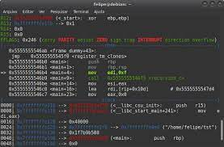

É uma linguagem de programação baseada em insytruções do computador. Diferente de outras linguagens, como o Python, C++ e Java, ela não utiliza estrtutura intática como if, switch ou for. É a linguagem de nívelmais baixo, mais próxima do hardware, do ponto de vista lógico.
